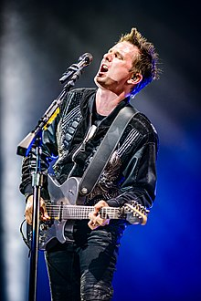
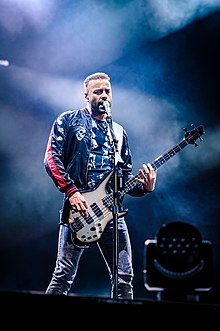

Matt Bellamy
Matthew James Bellamy (born 9 June 1978) is an English singer, musician, and songwriter. He is best known as the lead singer, guitarist, pianist, and primary songwriter of the rock band Muse. He is recognised for his eccentric stage persona, wide tenor vocal range and musicianship.[1] He has also released solo compositions.
Chris Wolstenholme
Christopher Tony Wolstenholme (born 2 December 1978) is an English musician. He is the bassist and backing vocalist for the rock band Muse. Chris Wolstenholme grew up in the English town of Rotherham before moving to Teignmouth, Devon, where he played drums for a post-punk band. He met Matt Bellamy and Dominic Howard from another band while both bands rehearsed in the same building.
Dominic Howard
Dominic James Howard (born 7 December 1977) is an English musician, best known as the drummer, percussionist and co-producer for the rock band Muse.